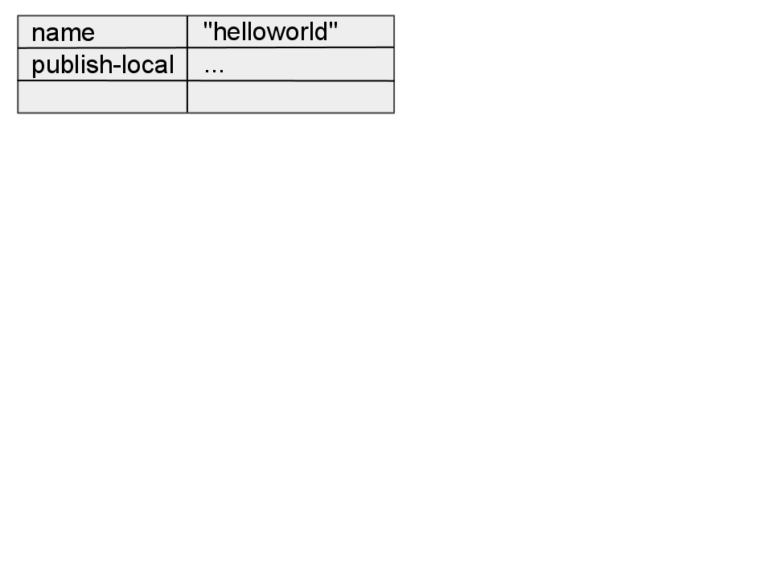
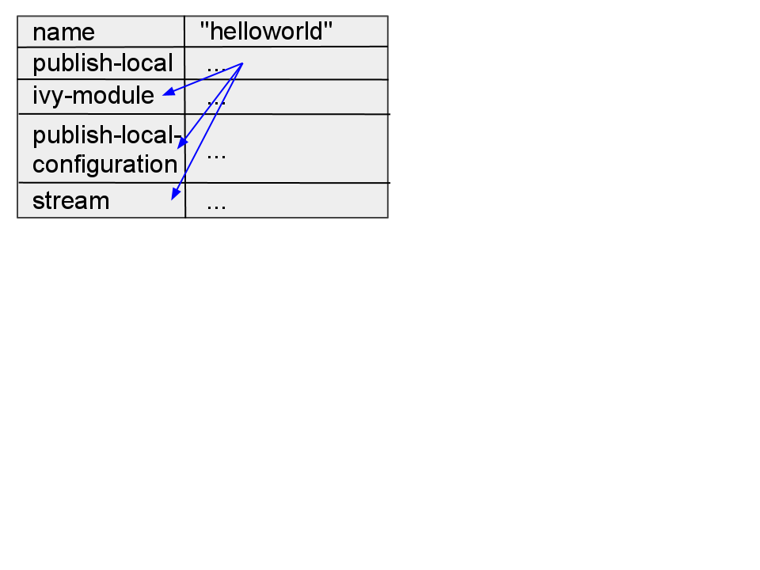
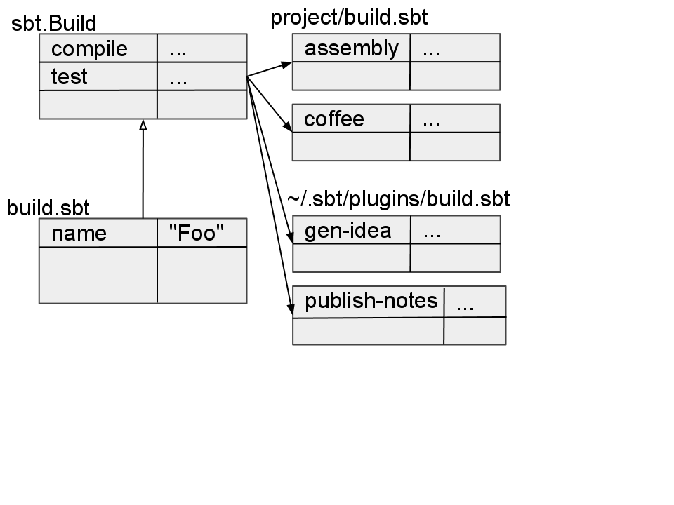

Simple Build Tool
defining a build in terms of typesafe expressions
not inheritance hierarchies or xml
defining a build in terms of typesafe expressions
not inheritance hierarchies or xml
key in scope bind (dependencies) value
<<=) other settings’ result types
> eval expression # toe dipping
build.sbt # single project
build.scala # family of projects
session is your passenger
> help session
> Manipulates session settings ...
> session list
> session save-all
type publish-local in the shell
> publish-local
[info] Packaging .../helloworld_2.9.1-sources.jar ...
...
type publish-local in the shell
> publish-local
[info] Packaging .../helloworld_2.9.1-sources.jar ...
...
settingspublish-local
settings is a Seq of Setting[T]

:=) context free<*)
val whichVersion = SettingKey[String]("which-version","...")
override def settings = Seq(
whichVersion <<= scalaVersion.apply(v =>
"mah scala version is %s" format v
)
)
val ohai = TaskKey[Unit]("ohai","prints ohai")
override def settings = Seq(
ohai <<= (streams, version) map { (out, vers) =>
out.log.info("ohai %s!" format vers)
}
)
a simple way to describe single module projects as a list of expressions
in the root directory of your project
// settings and tasks go here
build.sbt
// define the sbt version here
project/build.properties
// plugins go here
project/build.sbt
start with these settings in build.sbt
organization := "com.foo"
name := "bar"
version := "0.0.1"
scalaVersion := "2.9.1"
this is all you need in project/build.properties
sbt.version=0.11.2
if it can be cached, it’s a setting
if it depends on your project, it’s a task
Settings are evaluated at project load time and on reload.
once the project is loaded, the dependencies are fixed.
map or flatMap to pass values from one task to another
everything is parsed as an expression
= intialize
< depend on other values
<<= is the most general initialization operator
<<=
:= initializes a setting that is
start with these settings in build.sbt
organization := "org.myproject"
name := "something"
version := "0.1"
scalaVersion := "2.9.1"
and specify sbt 0.11.2 in build.properties:
sbt.version=0.11.2
resolvers += "name" at "url"
resolvers ++= Seq("name2" at "url2",
"name3" at "url3")
use += to append one dependency, or ++= to append a Seq of multiple dependencies.
libraryDependencies += "org.xyz" %% "xyz" % "2.1"
libraryDependencies ++= Seq(
"net.databinder" %% "dispatch-meetup" % "0.7.8",
"net.databinder" %% "dispatch-twitter" % "0.7.8"
)
libraryDependencies += "org.xyz" %% "xyz" % "2.1"
is the same as using <<= to call apply to update the previous value of
libraryDependencies with another ModuleID
libraryDependencies <<= libraryDependencies { deps =>
deps :+ "org.xyz" %% "xyz" % "2.1"
}
scalaVersion is itself a setting, so you need to combine an append operator with
the <<= operator:
<+= combines += and <<=
<++= combines ++= and <<=
libraryDependencies <+= scalaVersion( "org.scala-lang"
% "scala-compiler" % _ )
libraryDependencies <++= scalaVersion { sv =>
("org.scala-lang" % "scala-compiler" % sv) ::
("org.scala-lang" % "scalap" % sv) ::
Nil
}
use unmanagedJars to take care of unmanaged dependencies:
unmanagedJars in Compile
+= file("/home/rose/myproject/lib/some.jar")
Java:
javacOptions ++= Seq("-source", "1.6", "-target", "1.6")
javaOptions += "-Xms512M -Xmx2G"
Scala:
scalacOptions ++= Seq("-deprecation", "-unchecked")
Console-Project lets you use the DSL to
interact with your project:
evaluate tasks (use currentState - see Build State) for more
By default, sbt will publish
publishTo := Some("XYZ Repo"
at "http://repo.xyz.org/releases/")
using a file
credentials += Credentials(Path.userHome / ".ivy2" /
".credentials")
or inline
credentials += Credentials("Some Repo", "myproject.org",
"admin", "admin123")
publishTo <<= (version) { version: String =>
val nexus = "http://xyz.org/content/repositories/"
if (version.trim.endsWith("SNAPSHOT"))
Some("snapshots" at nexus+"snapshots/")
else
Some("releases" at nexus+"releases/")
}
a way to use external code in a build definition
in project/build.sbt
addSbtPlugin("com.typesafe.sbteclipse" % "sbteclipse-plugin" % "2.0.0-M3")
libraryDependencies += "org.clapper" %% "grizzled-scala" % "1.0.9"
at the top of build.sbt, add the imports:
import grizzled.sys._
import OperatingSystem._
// now do stuff with the plugin...
libraryDependencies ++=
if (os ==Windows)
("org.example" % "windows-only"
% "1.0") :: Nil
else
Nil
at the top of build.sbt, import the plugin settings:
seq(SomePlugin.someSettings :_*)
someSetting := "foo"

import sbt._
object FooBuild extends Build {
lazy val root = Project("root",
file(".")) aggregate(cli, scalaxbPlugin)
lazy val cli = Project("scalaxb", file("cli"))
lazy val scalaxbPlugin = Project("sbt-scalaxb",
file("sbt-scalaxb")) dependsOn(cli)
// common settings
override lazy val settings = super.settings ++ Seq(
...
)
}
lazy val cli = Project("scalaxb", file("cli"))
cli dir
Project object
lazy val cli = Project("scalaxb", file("cli"))
RootProject at uri or file
RootProject(file("/home/user/a-project"))
ProjectRef within uri or file
ProjectRef(
uri("git://github.com/dragos/dupcheck.git"),
"project-id")
root also runs on cli
lazy val root = Project("root",
file(".")) aggregate(cli, scalaxbPlugin)
running compile now compiles both cli and scalaxbPlugin
lazy val scalaxbPlugin = Project("sbt-scalaxb",
file("sbt-scalaxb")) dependsOn(cli)
use code without publish-local
lazy val root: Project = Project("root",
file(".")) aggregate(ui)
lazy val ui = Project("ui",
file("ui"), delegates = root :: Nil)
if a key is not found in ui/build.sbt it checks build.sbt.
workaround is to put common settings in build.scala.
override lazy val settings = super.settings ++ Seq(
version := "0.6.2-SNAPSHOT",
organization := "org.scalaxb",
scalaVersion := "2.9.0-1",
...
)
List[List[Int]]
public int f(List<List<Integer>> l){
if(l != null){
if(l.size() >= 1){
List<Integer> l2 = l.get(0);
if(l2 != null && l2.size() >= 1){
Integer i = l2.get(0);
if(i == 1 || i == 2 || i == 3)
return i;
}
}
if(l.size() >= 2){
List<Integer> l2 = l.get(1);
if(l2 != null && l2.size() >= 2)
return l2.get(1);
}
}
return 0;
}
def f(l:List[List[Int]]) = l match {
case List(List(x @ (1 | 2 | 3), _*), _*) => x
case List(_, List(_, x, _),_*) => x
case _ => 0
}
x match {
case _ =>
}
x match {
case y =>
}
x match {
case _:Foo =>
case a:C =>
case b:p.C =>
case c:T#C =>
case d:Singleton.type =>
case e:(A with B with C) =>
}
x match {
case y @ _ =>
}
x match {
case "hello" =>
case 5 =>
case true =>
case 'A' =>
case 5.5 =>
}
(x: @switch) match {
case 1 =>
case 2 =>
case 3 =>
}
(x: @switch) match {
case 1 =>
case 2 =>
case "3" =>
}
// error: could not emit switch for @switch annotated match
val hello = "hello"
"world" match {
case hello => // matcher
}
val Hello = "hello"
"world" match {
case Hello => // matcher ikke
}
def f(x:Int, y:Int) = x match {
case `y` =>
}
case class Foo(a:String, b:Int)
x match {
case Foo(aString, anInt) =>
}
case class Foo(a:String, b:Int)
x match {
case Foo("Hello", 5) =>
case Foo(aString, anInt) =>
}
sealed trait Tree
case class Branch(l:Tree, r:Tree) extends Tree
case class Leaf(v:Int) extends Tree
def sum(t:Tree):Int = t match {
case Branch(l, r) => sum(l) + sum(r)
case Leaf(v) => v
}
val tree = Branch(
Branch(Leaf(1), Leaf(2)),
Branch(Leaf(3), Leaf(4)))
sum(tree)
x match {
case (first, second) =>
}
x match {
case (first, second, third) =>
}
x match {
case List(a, b) =>
case List(a, b, c, _*) =>
}
x match {
case List(a, b) =>
case List(a, b, c, d @ _*) =>
}
def unapply(a:A):Boolean
def unapply(a:A):Option[B]
def unapplySeq(a:A):Option[Seq[B]]
object Empty {
def unapply(a:String):Boolean = a.trim.size == 0
}
x match {
case Empty() =>
}
object Even {
def unapply(a:Int):Option[Int] =
if(a % 2 == 0) Some(a) else None
}
x match {
case Even(even) =>
}
class Name{
String first; String last;
public Name(first:String, last:String){
this.first = first; this.last = last;
}
}
object FirstLast {
def unapply(name:Name):Option[(String, String)] =
Some(name.first, name.last)
}
(new Name("scala", "kurs")) match {
case FirstLast(first, last) =>
}
object Csv {
def unapplySeq(s:String) = Some(s.split(",").toSeq)
}
"1,2,3" match {
case Csv(a, b, c) => a+"-"+b+"-"+c
}
sealed trait Tree
object Branch {
private class Impl(val l:Tree, r:Tree) extends Tree
def apply(l:Tree, r:Tree):Tree = new Impl(l, r)
def unapply(t:Tree) = t match {
case i:Impl => Some(i.l, i.r)
case _ => None
}
}
object Leaf {
private class Impl(val v:Int) extends Tree
def apply(v:Int):Tree = new Impl(v)
def unapply(t:Tree) = t match {
case i:Impl => Some(i.v)
case _ => None
}
}
def sum(tree:Tree):Int = tree match {
case Branch(left, right) => sum(left) + sum(right)
case Leaf(value) => value
}
case class XX(a:String, b:Int)
x match {
case a XX b =>
}
case class ::[A](head:A, tail:List[A]) extends List[A] {
def ::[B >: A](b:B):List[B] = ::(b, this)
}
(1 :: 2 :: 3 :: Nil) match {
case a :: b :: c :: Nil =>
}
case class ::[A](head:A, tail:List[A]) extends List[A] {
def ::[B >: A](b:B):List[B] = ::(b, this)
}
(1 :: 2 :: 3 :: Nil) match {
case ::(1, ::(2, ::(3, Nil))) =>
}
object -> {
def unapply[A, B](ab:(A, B)):Option[(A, B)] =
Some(ab)
}
(1 -> 2) match {
case a -> b =>
}
(1 -> 2 -> 3) match {
case a -> b -> c =>
}
case class EX(l:List[String], num:Int, s:String)
x match {
case l EX (num, s) =>
}
case class EX(l:List[String], num:Int, s:String)
x match {
case a :: b :: c EX (num, s) =>
}
x match {
case 1 | 2 =>
case _:Foo | _:Bar =>
}
try {
// throw something
} catch {
case e @ (_:ExA | _:ExB) => // multicatch
}
<foo>bar</foo> match {
case <foo>{what}</foo> =>
}
x match {
case y if y > 2 =>
}
val pos:PartialFunction[Int, String] = {
case n if n > 0 => n.toString
}
pos.isDefinedAt(5) // true
pos.isDefinedAt(-1) // false
pos(5) // "5"
pos(-1) // java.util.NoSuchElementException
val pos:PartialFunction[Int, String] = {
case n if n > 0 => n.toString
}
val notPos:PartialFunction[Int, String] = {
case n if n <= 0 => "Not positive"
}
val all = pos orElse notPos
for(i <- -5 to 5)
println(all(i))
val Num = "(\\d+)".r
List("123", "abc", "321").collect{
case Num(num) => num.toInt
}
// List(123, 321)
List(-2, -1, 0, 1, 2).foldLeft(0){
case (a, e) => if e < 0 => a
case (a, e) => a + e
}
val (minors, adults) = people.partition(_.age < 18)
val Email = "(.+)@(.+)".r
val EMail(name, domain) = "foo@bar.com"
object Even {
def unapply(i:Int) =
if(i % 2 == 0) Some(i) else None
}
for{
Even(number) <- List(1, 2, 3, 4)
} yield number
val list:List[Any] = List(1, 2, 3)
list match {
case x:List[String] => "Strings" // matcher
case x:List[Int] => "Ints"
}
Exception in thread "main" java.lang.Error:
ch.epfl.lamp.fjbg.JCod$OffsetTooBigException: offset to big to fit in 16 bits: 55087
val a:Option[Int] = ...
a match {
case Some(i) => Some(i * 2)
case _ => None
}
val a:Option[Int] = ...
a.map(i => i * 2)
val a:Option[String] = ...
val b:Option[String] = ...
(a, b) match {
case (Some(hello), Some(world)) => Some(hello + " " + world)
case _ => None
}
val a:Option[String] = ...
val b:Option[String] = ...
for{
hello <- a
world <- b
} yield hello + " " + world